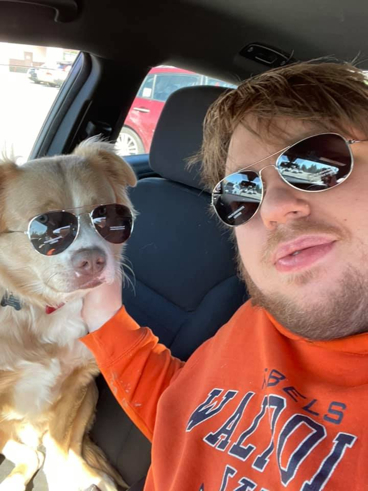

The real me.
$ > whoami
I know it may be shocking but I am not always dressed in all black wearing a hoodie behind a computer. While I might be similar to the hackers in movies we're not quite the same. This picture is my dog Charlie and I, he is a golden retriever, australian shepard mix. In my spare time I love to cook, play League of Legends, run Dungeons and Dragons, and take Charlie for rides.